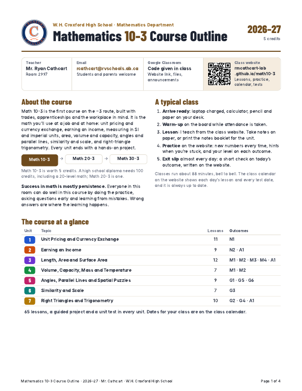

A Million Dollars or a Magic Penny?
You win a prize. Pick one:
A $1 000 000, right now.
B A magic penny: 1¢ today, and it doubles every day for 30 days. On day 30, you keep what it’s worth.
Which prize do you pick?
Welcome to Math 10-3
with Mr. Cathcart
Today is about how this course works: what we learn, where everything lives, how you’re assessed and what you need every day. Then we’ll do some math.
- sign in to our class website with the class code and my own PIN
- explain how outcomes and indicators make my grade
- find this unit’s project and say when it’s due
- say what to do in a fire drill or a lockdown
A Little About Me
What Is Math 10-3?
Math 10-3 is the workplace and apprenticeship math course: the math you’ll use at a job, in a trade and at home.
Where Math 10-3 Leads
The Course
The dates are a plan, not a promise. If we need longer on something, we take it, and you’ll always get notice. The class calendar on our website is always up to date.
Course Outline
The official outline, 4 pages
Everything from today, on paper: keep it, and share it with your family.
- The course: what it covers, where it leads, and every unit with its outcomes
- What you will learn: every outcome you’re assessed on, in Alberta Education’s words
- How you’re assessed: indicators, unit tests, exit slips and retests
- What to bring, calculators, expectations, academic integrity and a note for parents
Our Class Website
- Scan the code (or type the link) on your laptop.
- Type our class code.
- Pick your name from the class list.
- Make a 4-digit PIN. Keep it to yourself: it’s how the site knows your work is yours.
Join Our Google Classroom
- Go to classroom.google.com, signed in with your school Google account.
- + → Join class → type the code.
- On your phone? Get the Google Classroom app and use the same code.
Lessons, practice, projects, the calendar, tests and exit slips stay on our class website.
What a Typical Class Looks Like
How You’ll Learn
Unit Projects
One guided project in every unitEvery unit has a guided project on our website: a real job, one checkpoint at a time, with a worked example for each step. Unit 1’s is the Pop-Up Shop.
What to Bring Every Day
On your desk before class starts — every day, not just test days.
Calculators
Allowed on everything: practice, projects, exit slips and tests- A scientific calculator like the TI-30XIIS — around $15–20. It’s the one I use in every lesson.
- It needs √, x², brackets and SIN, COS, TAN keys (we use those in Unit 7).
- Your phone isn’t a calculator in here: it stays off and away.
- Not sure about yours? Bring it to me and we’ll test it together.
There’s a TI-30XIIS built into our website: the Calc button on every lesson and on the practice site. Same keys, same answers.
A scientific calculator follows BEDMAS: multiply before you add.
Got 20? That’s a basic calculator: it works left to right, so it gets questions like this wrong.
Money check: three shirts at $12.49.
Estimate first: 3 × $12 is about $36, so $37.47 makes sense.
How You’ll Be Assessed
Your mark shows which outcomes you can do,not points collected.
What Counts
Each unit test and unit project covers that unit’s outcomes. Exit slips check one lesson along the way.
Refresher lessons (the basics again, like fractions) are great practice, but they don’t count toward a level.
What I see you doing during work time matters. In a judgment call on an outcome, I’ll make the call based on how I’ve seen you work in class.
If I didn’t watch you do it, I can’t know the thinking is yours. That’s why evidence is gathered here, in this room. Practice at home is still great for learning.
Every outcome has its own card, like a trade ticket. It shows the best level you’ve reached — from practice, your project or a unit test — and it levels up from Trainee to Master Certified. Tap one to see it big.
Tests & Exit Slips on the Website
Retests: Earn Another Try
Academic Honesty
Copying someone’s work helps neither of you — it costs you the practice.
AI and photo-solver apps: fine for checking your work, not for producing it.
Talking, notes you weren’t allowed, another device, or using AI for any part of a test is cheating.
It can mean a call home and a 0 on that test (or a different test, at my discretion). Serious cases go further.
Leaving the test window locks your test.
Where to Get Help
Come ask me questions during work time. That’s what the time is for — I’d rather answer it now than mark it wrong later.
Don’t wait until a test to ask me a question! That’s the only time I won’t help you.
I’m here a lot of the time during lunch and before and after school.
…but during class is usually easiest for everyone.
Stuck on practice at home? Use the hints, then bring the question to class.
Phones, Bathroom & Hallways
Phones are off and away during class — that’s the provincial rule, not just mine.
Away means in your bag, not in your lap.
Need it for something class-related? Ask first. But it’s better to use your laptop.
Sign out on the sheet, take the hall pass, leave your phone with me — one person at a time.
Someone is always waiting on you to get back — don’t make it a field trip.
Genuinely don’t have a phone? Have a parent email me to confirm, so I know.
Compassionate Cavs
Cavs look out for each other. In here, that starts with how we treat someone who’s stuck. (The Croxford Way: Unity · Innovation · Excellence.)
Emergency Protocols
Boring until it isn’t. Know these four before you need them.Numbers About Me
No marks, no wrong answers — just a warm-up so nobody leaves day one having done zero math.